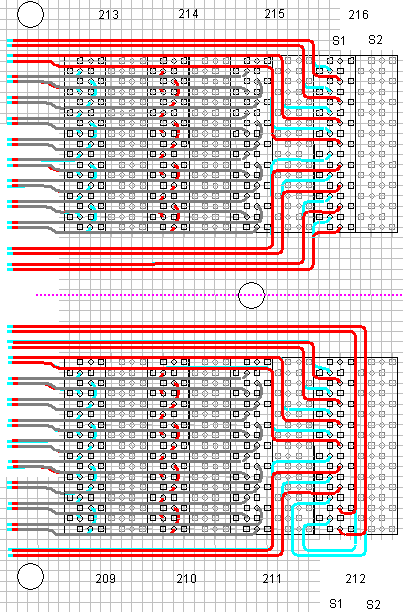

Separating signals
The pogo areas impose the highest restrictions on your DUT board design. This design example shows how high-speed and low-speed signals can be separated.
The example design uses three layers for high-speed signals: INR1, INR2 and INR3.
Each layer is represented by a different trace color. The layout is symbolic and not strictly dimensioned. It shows you where traces are routed and some of the restrictions.
- Gray traces are on INR1 - the uppermost high-speed signal layer
- Red traces are on INR2 - the next lower high-speed signal layer
- Light blue traces are on INR3 - the lowermost high-speed signal layer
- S1 = DUT pogo blocks with high-speed signals
- S2 = DC pogo blocks with low-speed signals
The following graphic shows an example layout for Group 2 on the DUT board and the trace routing between the pogo vias.
DUT board groups are often very similar and the trace routing within one group can generally be reapplied to other groups.

Note the S1 and S2 notations in the graphic above. Each block (the three-digit labels 213 to 216) includes two sub-blocks, S1 and S2. In this example, the high-speed DUT signals originate and terminate in the S1 sub-blocks (DUT pogo blocks); the low-speed DC signals originate and terminate in the S2 sub-blocks (DC pogo blocks).
Two pitfalls may arise when routing high-speed signals between signal vias in the low-speed sub-blocks.
First, the presence of a low-speed trace may corrupt the signal integrity of high-speed traces. If high-speed traces pass over breaks in the ground planes, caused by clearances around the low-speed vias, they suffer distortion.
You can avoid the problem by always routing the high-speed traces above ground and by carefully designing the clearances in the ground layers to provide a proper supportive ground for the enclosed layers.
The second pitfall is crosstalk between signals on the trace and signals on the vias.
Functional changes
- Introduced before SmarTest 6.3.2